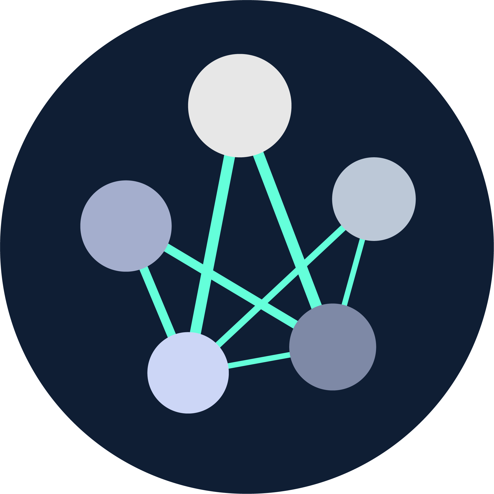
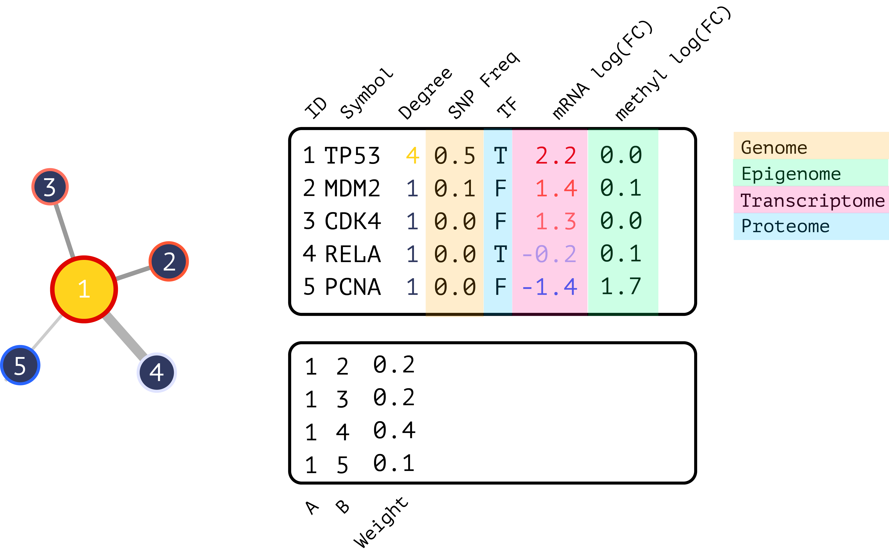

The goal of bieulergy is to facilitate interactive network biology in R, specifically the analysis, visualization, and comparison of biological regulatory networks. This includes building out R command-line functions geared towards biological networks as well as interactive analysis through R Shiny.
Documentation
Please visit the documentation for a comprehensive overview.
Gitter
Feel free to bring your questions, comments, or feedback to our gitter channel.
Installation
We recommend the latest version of R (>= 4.0.0) and installation directly from Github.
devtools::install_github("montilab/bieulergy")Usage
Networks are represented as interactive.omics.network objects with node/edge-level properties for mapping gene/protein symbols, centrality measures, and integrating multi-omics data layers into your analysis. These are R6 objects that extend omics.network objects to facilitate interactive analyses. You can find more information about omics.network objects here.

Interactive Omics Network Object
ndex <- function(uuid) {
ndexcon <- ndexr::ndex_connect()
data <- ndexr::ndex_get_network(ndexcon, uuid)
mat <- as.matrix(data$edges)
storage.mode(mat) <- "character"
ig <- igraph::graph_from_edgelist(mat[,c("s", "t")], directed=FALSE)
ids <- data$nodes[match(as.numeric(igraph::as_ids(V(ig))), data$nodes[,"@id"]), "n"]
V(ig)$label <- ids
return(ig)
}
# Global landscape of HIV–human protein complexes.
# Jaeger et al. Nature. 2011 Dec 21; 481(7381): 365–370
# @UUID: 1cbe89ab-fb5d-11e9-bb65-0ac135e8bacf
# https://www.ndexbio.org/viewer/networks/1cbe89ab-fb5d-11e9-bb65-0ac135e8bacf
ig <- ndex("1cbe89ab-fb5d-11e9-bb65-0ac135e8bacf")
ionet <- bieulergy::create.ionet(ig, type="ig")
str(ionet$properties)
head(ionet$nodes) id label symbol degree eigen betweenness stress
942 942 942 942 50 0.55159754 6204.11111 42589
1022 1022 1022 1022 1 0.05997156 0.00000 0
1020 1020 1020 1020 1 0.05997156 0.00000 0
792 792 792 792 2 0.16869497 85.44444 1602
1017 1017 1017 1017 1 0.05997156 0.00000 0
1015 1015 1015 1015 1 0.05997156 0.00000 0Graph and node properties are pre-computed for fast interactive rendering and analysis.
head(ionet$pca$var$contrib) Dim.1 Dim.2 Dim.3 Dim.4
degree 26.07208 4.763222 6.774052e+01 1.424178812
eigen 15.05581 84.934785 5.262416e-04 0.008874053
betweenness 28.87808 5.366217 2.387746e+01 41.878247044
stress 29.99403 4.935776 8.381493e+00 56.688700091Multiple Network Objects
Many of the downstream functions expect one or more interactive.omics.network objects for comparative analyses.
# Simulated networks from yeast data by Kristina Hanspers
# @UUID: 7831a991-5767-11ea-bfdc-0ac135e8bacf
# https://www.ndexbio.org/viewer/networks/7831a991-5767-11ea-bfdc-0ac135e8bacf
yeast.networks <- readRDS(file.path(system.file("extdata", package="bieulergy"), "yeast-networks.rds"))
is(yeast.networks, "list")
sapply(yeast.networks, is) Yeast_1 Yeast_2 Yeast_3
"interactive.omics.network" "interactive.omics.network" "interactive.omics.network"
yeast.1 <- yeast.networks$Yeast_1
head(yeast.1$nodes) id symbol is_tf lfc_mrna snp_frq label degree eigen betweenness stress
749 749 MTH1 FALSE -0.4385177 0.035319994 749 2 2.661820e-07 247.000 1361
751 751 SNF3 FALSE 0.1285503 0.003035238 751 1 5.257070e-08 0.000 0
109 109 LSM8 FALSE -0.5849400 0.062844766 109 7 1.295192e-06 3680.751 23693
743 743 ASN1 FALSE 1.1166966 0.229042875 743 1 2.299056e-04 0.000 0
692 692 SPC24 FALSE 0.2306554 0.009771783 692 3 1.164084e-03 493.000 617
740 740 GIP2 FALSE -0.5743279 0.060585153 740 2 2.958689e-03 1356.000 5772Here is an example of plotting the top nodes by degree centrality across networks.
bieulergy::networks.tnodes(networks=yeast.networks,
metric="degree",
symbols=TRUE,
size=5,
top=10)
Web Interface
Bieulergy is an R package and a Shiny application. Some functionality is exclusive to one or the other but there is a lot of overlap. The Shiny application is ideal for rapid analysis and comparison while the command line is more suitable for advanced custom analyses.
bieulergy::run.shiny()Or run with Docker…
git clone https://github.com/montilab/bieulergy
cd bieulergy
docker build --tag montilab/bieulergy:latest .Launch the package within a Docker environment..
Run the Shiny application. Go to http://localhost:8787 in the browser and you will be promted:
username: rstudio
password: bieulergy
Then enter the following:
Please refer to the documentation for more examples.